Подборку собрали 6 ноября, прошедшие события скрыты. Свежая афиша — на главной
Будний вечер · данные на 15 октября
Куда сходить вечером после работы
В будний вечер не хочется ехать через весь город. Здесь 146 коротких планов: одна-две точки рядом друг с другом и чек примерно до 3 000 ₽ на человека, 83 из них — в центре. Ниже — 25 вечерних событий в ближайшие будни.
- 146 планов
- 25 событий
Короткие планы на вечер 24 из 146
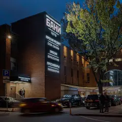
- Краснопресненские бани · Баня и хамам · м. Улица 1905 года
- 13 минут пешкомРаковарня · Раки и караоке
Финская сауна, хамам и бассейн в Краснопресненских банях, а потом через Трёхгорку в «Раковарню» — раки, морепродукты и караоке до шести утра.
Открыть план: Баня на Пресне и ракиПозвать сюда: Баня на Пресне и раки
Фото: Никонико962, CC BY-SA 4.0 · Wikimedia Commons
- Здание Центросоюза · Модернизм Ле Корбюзье · м. Сретенский бульвар
- 2 минуты пешкомKeep · Гастробар
Единственное здание Корбюзье в России — розовый туф и стекло, а потом ужин при свечах в Keep через дорогу.
Открыть план: Ле Корбюзье на МясницкойПозвать сюда: Ле Корбюзье на Мясницкой
Фото: Gennady Grachev from Moscow, Russia, CC BY 2.0 · Wikimedia Commons
- Малый театр · Театр · м. Театральная
- 3 минуты пешкомНаука и жизнь · Круглосуточный бар
Большая классика в Малом театре, а в трёх минутах — круглосуточный бар «Наука и жизнь»: авторские коктейли и настолки — торопиться некуда.
Открыть план: Малый театр и бар без закрытияПозвать сюда: Малый театр и бар без закрытия
Фото: Никонико962, CC BY-SA 4.0 · Wikimedia Commons
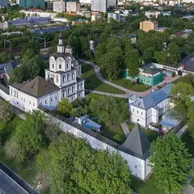
- Андроников монастырь · Музей и монастырь · м. Площадь Ильича
- 6 минут пешкомСекрет · Приватный кинотеатр
Прогулка вокруг белых стен Андроникова монастыря, а потом приватный кинотеатр «Секрет»: свой зал с большим диваном, любой фильм и работа до шести утра.
Открыть план: Монастырь и кинозал только для васПозвать сюда: Монастырь и кинозал только для вас
Фото: A.Savin, Free Art License · Wikimedia Commons
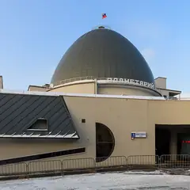
- Московский планетарий · Планетарий · м. Баррикадная
- 11 минут пешкомShort talk · Кафе
Звёздное небо под огромным куполом планетария, а потом кафе Short talk: кофе, настольная игра и негромкая музыка выручат, если разговор сначала не клеится.
Открыть план: Планетарий и настолкиПозвать сюда: Планетарий и настолки
Фото: A.Savin, Free Art License · Wikimedia Commons
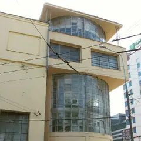
- Клуб имени Зуева · Конструктивизм · м. Белорусская
- 9 минут пешкомКультурный код · Кафе
Конструктивизм Голосова: вечером стеклянная лестница светится изнутри. Перед этим — кофе в «Культурном коде» на Чаянова.
Открыть план: Стеклянный цилиндр клуба ЗуеваПозвать сюда: Стеклянный цилиндр клуба Зуева
Фото: Guldfisken, CC BY-SA 3.0 · Wikimedia Commons
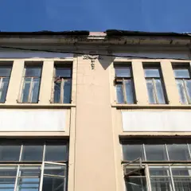
- Дом Культур · Ресторан-бар · м. Сухаревская
- 1 минута пешкомМосковский стендап клуб (Comedy 34) · Стендап-клуб
Ужин в ресторане-баре «Дом Культур» в старой усадьбе на Сретенке, а по соседству Comedy 34: открытые и ночные микрофоны от 400 ₽ и «чёрный» стендап.
Открыть план: Ужин в усадьбе и ночной микрофонПозвать сюда: Ужин в усадьбе и ночной микрофон
Фото здания: NVO, CC BY-SA 3.0 · Wikimedia Commons
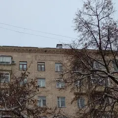
- QuestReality · Эскейп-рум · м. Рижская
- 9 минут пешкомРассольников · Ресторан русской кухни
Нелинейные «7 загадок фараона» или «На ощупь» в QuestReality у «Рижской», а потом соленья, настойки и сытный ужин в «Рассольникове».
Открыть план: Эскейп-рум и русская кухняПозвать сюда: Эскейп-рум и русская кухня
Фото здания: Andreykor, CC BY 4.0 · Wikimedia Commons
- Ростокинский акведук · Акведук XVIII века · м. ВДНХ
- 12 минут пешкомИнкубо · Квест с актёрами
В сумерках пройти вдоль каменного Ростокинского акведука 1780-х, а потом хоррор в «Инкубо» — «Пожиратель душ» или неоновая «Ночь в Токио» с сильными актёрами.
Открыть план: Акведук в сумерках и хоррор-квестПозвать сюда: Акведук в сумерках и хоррор-квест
Фото: Dmitry Ivanov., CC BY-SA 4.0 · Wikimedia Commons
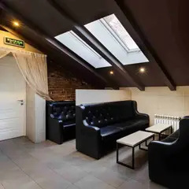
- Селезнёвские бани · Баня · м. Новослободская
- 16 минут пешкомДепо · Фудмолл
Хорошо пропариться в Селезнёвских, а потом в Депо: 75 кафе, каждый берёт своё.
Открыть план: Баня и фудмоллПозвать сюда: Баня и фудмолл
Фото: Александр Спиридонов, CC BY 3.0 · Wikimedia Commons
- Краснопресненские бани · Баня и хамам · м. Улица 1905 года
- 18 минут пешкомHite · Корейский ресторан и караоке
Хамам и бассейн, а после — своя караоке-комната с грилем.
Открыть план: Баня, потом караокеПозвать сюда: Баня, потом караоке
Фото: Никонико962, CC BY-SA 4.0 · Wikimedia Commons
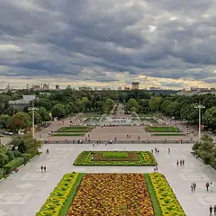
- Парк Горького · Парк · м. Октябрьская
- 11 минут пешкомSUBSTANCE · Бильярд-бистро
Прогулка по набережной и пара партий в бильярд-бистро SUBSTANCE.
Открыть план: Бильярд в Парке ГорькогоПозвать сюда: Бильярд в Парке Горького
Фото: A.Savin, Free Art License · Wikimedia Commons
- Музей Булгакова · Музей · м. Маяковская
- 8 минут пешкомЗойка · Ресторан
«Нехорошая квартира» №50 в музее Булгакова (по четвергам открыт до 21:00), а потом ужин в «Зойкиной квартире» на Патриарших, где остановилось время.
Открыть план: Булгаковский вечерПозвать сюда: Булгаковский вечер
Фото: Usolt, CC BY 3.0 · Wikimedia Commons
- Чистые пруды · Бульвар и пруд · м. Чистые пруды
- 12 минут пешкомKeep · Гастробар
Круг по Чистым прудам в сумерках, потом свечи и росписи с ангелами в готическом гастробаре Keep во дворах Мясницкой.
Открыть план: Бульвары и готический ужинПозвать сюда: Бульвары и готический ужин
Фото: Vasilii Martynov, CC BY-SA 4.0 · Wikimedia Commons
- Дом Гоголя · Музей · м. Арбатская
- 4 минуты пешкомХудожественный · Кинотеатр
Дом, где Гоголь сжёг второй том «Мёртвых душ», и вечерний сеанс в старейшем кинотеатре Москвы.
Открыть план: Вий, Гоголь и киноПозвать сюда: Вий, Гоголь и кино
Фото: Shakko, CC BY-SA 4.0 · Wikimedia Commons
- Винный базар · Винный бар · м. Трубная
- 10 минут пешкомSEMENOV · Караоке
Дегустация в «Винном базаре», а потом караоке с танцполом и кухней в 10 минутах пешком.
Открыть план: Вино и песниПозвать сюда: Вино и песни
Фото здания: Mike1979 Russia, CC BY-SA 3.0 · Wikimedia Commons
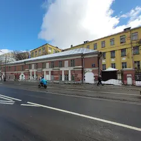
- Сад им. Баумана · Сад · м. Красные Ворота
- 12 минут пешкомUrban Winery · Городская винодельня
Сад Баумана и городская винодельня, где вино делают прямо здесь.
Открыть план: Вино с производстваПозвать сюда: Вино с производства
Фото здания: Svetlov Artem, CC BY 4.0 · Wikimedia Commons
- Культурный центр ЗИЛ · Культурный центр · м. Автозаводская
- 13 минут пешкомStrEAT · Фудхолл
Лекция или кино в конструктивистском ДК ЗИЛ, а потом фудхолл StrEAT в корпусе завода «Динамо»: дагестанские хинкалы или баббл-ти — каждый берёт своё.
Открыть план: ДК ЗИЛ и уличная едаПозвать сюда: ДК ЗИЛ и уличная еда
Фото: NVO, CC BY-SA 3.0 · Wikimedia Commons
- Парк «Зарядье» · Парк · м. Китай-город
- 9 минут пешкомBrasserie Lambic · Пивной ресторан
Прогулка по Парящему мосту, потом мидии и двести сортов пива в брассери за десять минут.
Открыть план: Зарядье и бельгийское пивоПозвать сюда: Зарядье и бельгийское пиво
Фото: Alina Vozna, CC BY-SA 4.0 · Wikimedia Commons
- Московский планетарий · Планетарий · м. Баррикадная
- 2 минуты пешкомBlinkGame · Компьютерный клуб
Звёздный зал под огромным куполом планетария, а через две минуты лаунж с четырьмя PS5: сыграть вдвоём на желание.
Открыть план: Звёзды и PS5 на двоихПозвать сюда: Звёзды и PS5 на двоих
Фото: A.Savin, Free Art License · Wikimedia Commons
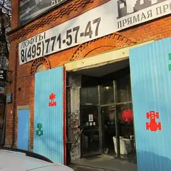
- Музей советских игровых автоматов · Музей-аркада · м. Кузнецкий Мост
- 7 минут пешкомДебют · Бистро с театральной концепцией
Сначала «Морской бой», «Городки» и «Танкодром» в Музее советских игровых автоматов на Кузнецком Мосту (открыт до 21), потом в семи минутах — ужин в «Дебюте» во дворе «Столешники Хаус»: меню разбито на акты, а в зале иногда играют спектакли.
Открыть план: Игровые автоматы и ужин по актамПозвать сюда: Игровые автоматы и ужин по актам
Фото: Hanno Böck, CC0 · Wikimedia Commons
- Музей русского импрессионизма · Музей · м. Белорусская
- 1 минута пешкомБольшевик Лофт · Ресторан со стендапом
Коровин, Серов и Кустодиев в Музее русского импрессионизма, а в соседнем краснокирпичном корпусе бывшей фабрики «Большевик» — ужин и стендап в Большевик Лофт.
Открыть план: Импрессионисты и стендап на фабрикеПозвать сюда: Импрессионисты и стендап на фабрике
Фото: Sergey A. Demidov, CC BY 4.0 · Wikimedia Commons
- KGallery Bookcafe · Книжный и кофейня в усадьбе · м. Китай-город
- 1 минута пешкомКабаре «Шум» · Кабаре
Кофе и альбомы по искусству в KGallery, а потом там же, в усадьбе Филипповых, — петербургское кабаре «Шум» с чтениями под баян и спектаклями.
Открыть план: Кабаре и книжный в усадьбеПозвать сюда: Кабаре и книжный в усадьбе
Фото: Никонико962, CC BY-SA 4.0 · Wikimedia Commons
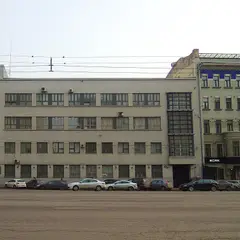
- 128bpm · Студия танцев · м. Маяковская
- 2 минуты пешкомKaraoke Lights · Караоке
Разовое занятие high heels для новичков — и сразу в караоке-бар на Садовом, буквально в двух минутах.
Открыть план: Каблуки и караокеПозвать сюда: Каблуки и караоке
Фото здания: Shakko, CC BY-SA 4.0 · Wikimedia Commons


Вечерние события в будни 12 из 25
Театр Российской армии, Большая сцена · м. Достоевская · 5 000–44 000 ₽ · 6+
Юбилейная серия сольных концертов: знаменитые песни, новые вещи и разговор с залом о жизни. Вечеров много — до 8 ноября, можно выбрать удобный.
Подробнее: Александр РозенбаумПозвать сюда: Александр РозенбаумБилеты : Александр Розенбаум (страница с билетами, откроется в новой вкладке)
Фото: tiger rus, CC BY 3.0 · Wikimedia Commons
Театр Наций, Основная сцена · м. Чеховская · 18+
Горьковская купчиха в тексте Константина Стешика: за семейным праздником прячутся боль и одиночество. Вассу играет Юлия Пересильд; идёт 1 ч 45 мин, антракта нет.
Подробнее: ВассаПозвать сюда: ВассаБилеты : Васса (страница с билетами, откроется в новой вкладке)
Фото: Mike1979 Russia, CC BY-SA 3.0 · Wikimedia Commons
МХТ имени Чехова, Основная сцена · м. Охотный ряд · 500–7 500 ₽ · 18+
Николай Рощин сплёл Сервантеса и Булгакова: репетиции «Дон Кихота» в театре конца 1930-х превращаются в историю о цене творчества. Около двух часов.
Подробнее: Дон КихотПозвать сюда: Дон КихотБилеты : Дон Кихот (страница с билетами, откроется в новой вкладке)
Фото: A.Savin, Free Art License · Wikimedia Commons
Театр на Бронной, Основная сцена · м. Тверская · от 9 000 ₽ · 16+
Константин Богомолов переносит «Ифигению в Авлиде» Еврипида в 2090 год. Масштабно, дерзко и спорно: разговоров после спектакля хватит на весь ужин.
Подробнее: Космический ветер, или мраморная девочкаПозвать сюда: Космический ветер, или мраморная девочкаБилеты : Космический ветер, или мраморная девочка (страница с билетами, откроется в новой вкладке)
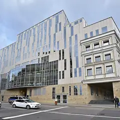
Театр Табакова, Историческая сцена · м. Чистые пруды · 16+
Весенняя премьера «Табакерки»: водевиль графа Соллогуба с песнями и фокусами в легендарном подвале на Чаплыгина. Лёгкие 1 ч 20 мин.
Подробнее: Нежное сердцеПозвать сюда: Нежное сердцеБилеты : Нежное сердце (страница с билетами, откроется в новой вкладке)
Фото: mos.ru, CC BY 4.0 · Wikimedia Commons
Дом музыки · м. Павелецкая · 1 200–2 500 ₽ · 6+
Камерный ансамбль играет собственные аранжировки песен Radiohead — не трибьют, а новое прочтение. Пятничный вечер для любителей и рока, и классики.
Подробнее: Хиты Radiohead. Simple Music EnsembleПозвать сюда: Хиты Radiohead. Simple Music EnsembleБилеты : Хиты Radiohead. Simple Music Ensemble (страница с билетами, откроется в новой вкладке)
Фото: Nevermind2, общественное достояние · Wikimedia Commons
РЖД Арена · м. Черкизовская
«Локомотив» играет дома, в гостях «Рубин». Зови друзей, бери шарф и приходи заранее — у стадиона до матча своя атмосфера.
Подробнее: Локомотив — РубинПозвать сюда: Локомотив — РубинБилеты : Локомотив — Рубин (страница с билетами, откроется в новой вкладке)
Клуб Алексея Козлова · м. Китай-город · от 2 500 ₽ · 12+
Джаз-рок «Арсенала», который Алексей Козлов основал ещё в 1973-м, по пятницам — с Анной Королёвой на вокале и саксофоне. Ужин и живая музыка.
Подробнее: Анна Королёва и «Арсенал» Алексея КозловаПозвать сюда: Анна Королёва и «Арсенал» Алексея КозловаБилеты : Анна Королёва и «Арсенал» Алексея Козлова (страница с билетами, откроется в новой вкладке)
VK Stadium · м. Сокол · от 3 300 ₽ · 16+
Cream Soda с осенним туром: танцевальная электроника с грустинкой. Концерт в пятницу — вечер легко продолжить в баре.
Подробнее: Cream SodaПозвать сюда: Cream SodaБилеты : Cream Soda (страница с билетами, откроется в новой вкладке)
Кафедральный собор Святых Петра и Павла · м. Китай-город · 1 000–4 500 ₽ · 12+
Стеклянная арфа звучит почти неземно, а вместе с органом и сопрано — Бах, Шуберт и Чайковский. Поздний пятничный концерт при свечах.
Подробнее: Романтический вечер: звуки и свечи. Стеклянная арфа, орган, голосПозвать сюда: Романтический вечер: звуки и свечи. Стеклянная арфа, орган, голосБилеты : Романтический вечер: звуки и свечи. Стеклянная арфа, орган, голос (страница с билетами, откроется в новой вкладке)
Фото: krassotkin, CC BY 3.0 · Wikimedia Commons
Стендап клуб на Трубной, Большой зал · м. Трубная · от 1 200 ₽ · 18+
Ночной формат для тех, кто не обижается: ведущий и четыре комика без цензуры и запретных тем. Идёт по пятницам и субботам в 23:00.
Подробнее: Жёсткий стендапПозвать сюда: Жёсткий стендапБилеты : Жёсткий стендап (страница с билетами, откроется в новой вкладке)
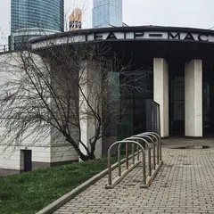
Мастерская Петра Фоменко, Новая сцена · м. Москва-Сити
Премьера Ивана Поповски по Достоевскому: фантасмагория о Фоме Опискине, подмявшем под себя целое имение. Больше четырёх часов с антрактом.
Подробнее: Село Степанчиково и его обитателиПозвать сюда: Село Степанчиково и его обитателиБилеты : Село Степанчиково и его обитатели (страница с билетами, откроется в новой вкладке)
Фото: Gennady Grachev from Moscow, Russia, CC BY 2.0 · Wikimedia Commons


Как позвать
- Выбери план, место или событие — в карточке адрес, цены и маршрут в Яндекс Картах.
- Нажми «Позвать сюда» — соберётся приглашение-игра для свидания или голосование для компании.
- Отправь ссылку в любой мессенджер: тебе ответят, а компания отметит, куда и когда может. Бесплатно и без регистрации.